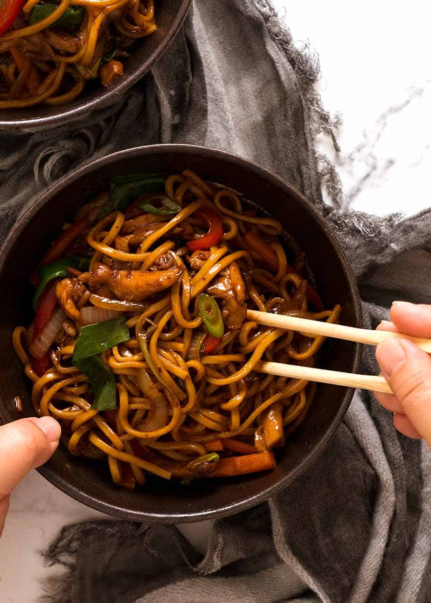

Lo Mein Sauce

Lo Mein Sauce is essential part of Lo Mein Noodles. You can also use it to marinate meat, chicken. It gives out classical asian cuisine taste.
Ingredients:
- 4 tsp cornflour / cornstarch
- 2 tbsp dark soy sauce
- 2 tbsp soy sauce or light soy sauce
- 1 tbsp Chinese cooking wine or Mirin
- 1 tsp white sugar (omit if using Mirin)
- 1/2 tsp sesame oil , toasted, optional
- 1/4 tsp white pepper (sub black)
Steps:
- Mix cornflour and dark soy until lump free, then add remaining Sauce ingredients.
Back to main page